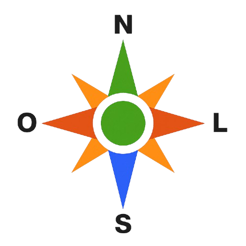

−
Análises da Lavoura
Vigor da Lavoura
Vigor
Área (ha)
% da área
Baixo
0,79
2,0%
Médio
9,96
25,8%
Alto
27,85
72,2%
Total
38,59
100%
Declividade (°)
0° – 8°
8° – 15°
15° – 25°
25° – 45°
> 45°

Resp. Técnico:
Denys R. Brehmer
Contato:
(49) 9 3381-8493